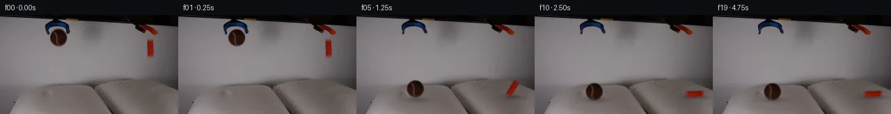

![首帧]()

Round 00
2026-11-04T16:49:42.318591+00:00像素候选变化代码 +278/−0inspection 更新
pixels 383ab2811d246b8c · code f7ff549251abbb08
查看本轮 generate.py 真实 diff
--- previous/generate.py
+++ current/generate.py
@@ -0,0 +1,278 @@
+"""Pixel continuation using measured source patches and analytic pixel operations."""
+from pathlib import Path
+import json
+import re
+import base64
+import numpy as np
+from PIL import Image, ImageDraw
+from scipy.ndimage import map_coordinates, gaussian_filter
+from scipy.special import erf
+from artifact_io import save
+
+ROOT = Path(__file__).resolve().parent
+SRC = np.asarray(Image.open(ROOT / 'first_frame.png').convert('RGB'), dtype=np.float64)
+H, W = SRC.shape[:2]
+Y, X = np.mgrid[:H, :W].astype(np.float64)
+
+
+def smoothstep(a, b, v):
+ u = np.clip((v-a)/(b-a), 0.0, 1.0)
+ return u*u*(3-2*u)
+
+
+def background_fit(bounds, exclude):
+ """Fit a low-order RGB surface to nearby unobstructed tabletop pixels."""
+ x0,y0,x1,y1 = bounds
+ region = (X>=x0)&(X<=x1)&(Y>=y0)&(Y<=y1)
+ good = region & ~exclude & (SRC[...,0]>85) & (np.abs(SRC[...,0]-SRC[...,2])<15)
+ u = (X-(x0+x1)/2)/((x1-x0)/2)
+ v = (Y-(y0+y1)/2)/((y1-y0)/2)
+ terms = np.stack([np.ones_like(u),u,v,u*u,u*v,v*v,u**3,u*u*v,u*v*v,v**3],axis=-1)
+ coef = np.linalg.lstsq(terms[good], SRC[good], rcond=None)[0]
+ out = np.einsum('hwk,kc->hwc',terms,coef)
+ return np.clip(out, 0, 159)
+
+ball_c = (83.7,32.65)
+block_c = (216.05,47.9)
+ball_norm = np.sqrt(((X-ball_c[0])/12.25)**2+((Y-ball_c[1])/12.25)**2)
+ball_clear = 1-smoothstep(1.09,1.29, np.sqrt(((X-83.7)/12.7)**2+((Y-33.0)/13.7)**2))
+blue = (SRC[...,2]>SRC[...,0]+7)&(SRC[...,2]>SRC[...,1]+4)&(X>=64)&(X<=101)&(Y>=9)&(Y<=31)
+ball_bg = background_fit((53,17,114,57), (ball_clear>0)|(blue)|((SRC[...,0]<80)&(Y<31)))
+# Color matting is limited to the silhouette; the interior retains the original seam texture.
+ball_def = np.clip(((ball_bg[...,1]-SRC[...,1])/(ball_bg[...,1]-20) +
+ (ball_bg[...,2]-SRC[...,2])/(ball_bg[...,2]-11))/2,0,1)
+ball_alpha = (1-smoothstep(.98,1.10,ball_norm))*np.where(ball_norm<.86,1,ball_def)
+ball_alpha *= (X>68)&(X<100)&(Y>18)&(Y<48)
+ball_alpha[blue] = 0
+ball_fg = np.clip((SRC-ball_bg*(1-ball_alpha[...,None]))/np.maximum(ball_alpha[...,None],.001),0,175)
+
+block_region = (X>=209)&(X<=224)&(Y>=32)&(Y<=64)
+block_bg = background_fit((195,30,238,74), block_region)
+block_alpha = np.clip(np.maximum((block_bg[...,1]-SRC[...,1])/(block_bg[...,1]-23),
+ (block_bg[...,2]-SRC[...,2])/(block_bg[...,2]-10)),0,1)
+block_alpha *= block_region
+block_alpha[block_alpha<.025] = 0
+block_fg = np.clip((SRC-block_bg*(1-block_alpha[...,None]))/np.maximum(block_alpha[...,None],.001),0,175)
+
+# Separate just the lower blue jaws, with a feathered join to the immobile upper ring.
+jaw_a = gaussian_filter(blue.astype(float),.30)*smoothstep(17,20,Y)
+jaw_a *= ((X<78)|(X>91))
+jaw_a *= 1-smoothstep(28.5,30.5,Y)
+jaw_fg = np.clip((SRC-ball_bg*(1-jaw_a[...,None]))/np.maximum(jaw_a[...,None],.001),0,159)
+left_jaw = jaw_a*(X<83.7)
+right_jaw = jaw_a*(X>83.7)
+# The short lower contact at the right tool, not its main arm, moves outward.
+right_tip_region = (X>=202)&(X<=213)&(Y>=21)&(Y<=28)
+right_tip = right_tip_region & (SRC[...,0]-SRC[...,1]>27)
+tip_bg = background_fit((196,20,220,33), right_tip_region | (SRC[...,0]<80))
+tip_alpha = gaussian_filter(right_tip.astype(float),.30)*smoothstep(21,24,Y)
+tip_fg = np.clip((SRC-tip_bg*(1-tip_alpha[...,None]))/np.maximum(tip_alpha[...,None],.001),0,159)
+
+BASE = SRC.copy()
+# Reconstruct the vacated parts with local tabletop interpolation, keeping fixed tool pixels.
+clear = ball_clear*(1-blue.astype(float))
+BASE = BASE*(1-clear[...,None])+ball_bg*clear[...,None]
+block_clear = block_region.astype(float)
+# A one-pixel feather stops the fitted patch at an unchanged surrounding ring.
+block_clear *= smoothstep(208,210,X)*(1-smoothstep(223,225,X))*smoothstep(31,33,Y)*(1-smoothstep(63,65,Y))
+BASE = BASE*(1-block_clear[...,None])+block_bg*block_clear[...,None]
+for alpha,bg in [(jaw_a,ball_bg),(tip_alpha,tip_bg)]:
+ BASE = BASE*(1-alpha[...,None])+bg*alpha[...,None]
+
+
+def sample(a, sx, sy):
+ if a.ndim==2:
+ return map_coordinates(a,[sy,sx],order=1,mode='constant',cval=0,prefilter=False)
+ return np.stack([map_coordinates(a[...,c],[sy,sx],order=1,mode='constant',cval=0,prefilter=False) for c in range(a.shape[-1])],-1)
+
… diff truncated; 191 more lines …